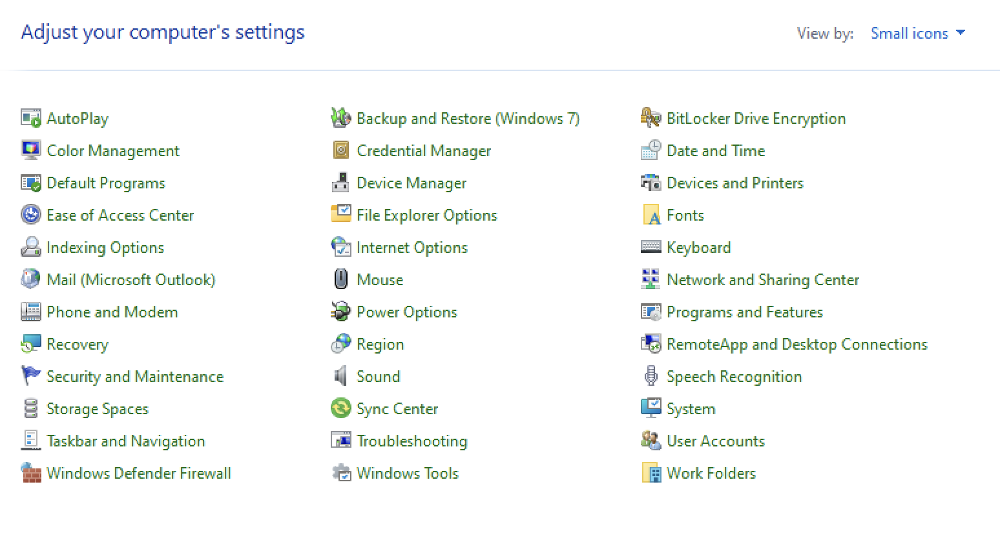

Windows solutions
How to setting up your external monitor with your laptop closed
-
Open your control panel
 -
Click in Power Options
Note Make sure you change your View By: "Small or Large icons" in order to see all the options
-
On the left side of the screen, Click Choose what closing the lid does
-
On the Power and sleep buttons and lid settings -> Where it says When I close the lid:
Click the dropdown arrow and select Do nothing for On battery Option and Do nothing for Plugged in Option.
Then in the bottom of the screen click Save changes and you are all set.